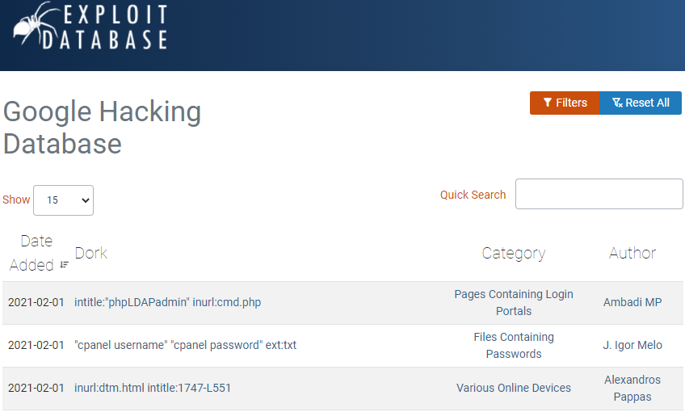

Dissecting the Hack is what happens when you successfully mix a textbook and an action novel. The first third of the book is a well-written story about a Russian hacking syndicate and a group of juvenile hackers who end up taking them on. As different hacking techniques are used, the book provides references to the later two thirds of the book which provides more detail into how these real hacking methods are performed. Although it makes it a bit distracting to jump from story to explanation, I loved the format because it did a great job of connecting highly technical concepts to real-world actions. One of the most difficult parts of getting into Cybersecurity is that the concepts are so abstract that if you don't have any tactile experience they end up going over your head (at least mine).
As part of this series of posts, I want to breakdown the last two thirds of the book by going through a typical attacker framework (other commonly known frameworks include the Lockheed Cyber Kill Chain or the MITRE ATT&CK Framework) The intention of this post isn't to teach you to hack but rather to better protect your systems by walking you through an attacker mindset. The best defense is a good offense. Many of these techniques can be used against your own networks to provide valuable information around your own exploitability.
Reconnaissance
The most sophisticated hackers don't just hack haphazardly, they spend a lot of time researching a suitable target before they attack. Just as a burglar spends time scoping a house to determine how difficult it would be to break in, a hacker spends time finding a target that won't be too much of a headache and will get them the most bang for their buck. Below are some of the methods used to perform reconnaissance.
Social Networking
With nearly everyone having a web presence, a simple Google and social media search can unearth a wealth of information. In looking for an easily exploitable target, company employees are usually the first place to look. Specifically, employees with something to hide or who post a little too much. Maybe it's a gambling debt or a drug addiction, whatever the pressure point, these weaknesses are exploitable by an attacker. The truth is, these pressure points don't even have to be real, sometimes a simple threat, "I'll tell your wife about your secret", can be sufficient to put pressure on the victim. That being said, the carrot is always better than the stick. In every company there is an unhappy employee who with a bit of prodding can come around to your objectives. To assure success however, the stick is nice to have in your back pocket.
Another method to find a suitable target through social networking is by looking for employee leaks. Let's say an employee posts a joke about how their servers are so old they use software from 1998 or even indirectly mentions a programming language they've been studying up on for an upcoming implementation. We can put pieces of information together to infer outdated hardware or to better design our exploits for a particular programming language.
Google Hacking

The next place we'll want to look for information, naturally, is Google (although nearly any search engine will work). Although everyone knows what "Googling" is, most don't know that there are advanced capabilities which we can leverage to find a suitable target. We can use keywords which indicate vulnerable software or even sensitive data to find a valuable target. You can visit the Exploit Database at "https://www.exploit-db.com/google-hacking-database" for a list of newly found search queries which return interesting sites such as obscure login portals. Beyond these, there are advanced search operators which can help you query sites and help you lock in to a target. For instance
Search Operator
Description
site:
Limits all search results to a single domain name and the pages contained within it. Works well to get a map of a domain, ensure you don't leave a space after the search operator.
inurl:
Searches for the keyword in the Web page's URL. Works
file type:
Limit search to a specific file type, for example PDFs within a website
intitle:
Searches for the keyword in the title of the Web page
intext:
Specifies that the keyword must appear within the text of the web page
inanchor:
Searches for the keyword only within HyperText Markup Language (HTML) anchors (page links)
link:
Searches for web pages that point to the specified URL. Works alright, you can also find this in the Google Search Console
ext:
Searches for web documents that have the specified file extension
cache:
Searches for the specified URL in Google's archived cache. This can actually now be done by clicking on the hamburger menu next to a URL and clicking "cached"or by using tools such as the Wayback machine.
Note, these search operators can be mixed and matched, order doesn't really matter here. Additionally, you can add quotation marks to search terms for an exact match or to narrow in on a search operator. Putting this all together, a search of:
site:dogs.com inurl:team filetype:jpg"
Would search for images in a JPG format on dogs.com whose file path contains the term "team". You could also remove the InURL search query to search the entire web for JPGs with "team" in the file path. A lot of these tools have been integrated within Google's Search Console Tools and are mainly geared at search optimization. That being said, the Console Tools won't necessarily help you narrow in on a target so these search operators are still valuable. For instance, if we're looking for an email address, phone number, or address, perhaps we use the "inurl" search operator to find a "contact" page. We could narrow our search even more by adding an extension or location such as "Champaign, Illinois" to the tail end of our "site:" search operator to limit our search to locations in our area.
A particularly stealthy tool is "cache:" which actually pulls the site from Google's server rather than the site's web server. Google maintains a copy of most websites in their servers, called a cached website. This is helpful to us because everytime you access a company's site, they keep a record within their web server logs that your IP accessed the site. As a result, most attackers obscure their IP through relaying proxies. Using the cache search or the Wayback Machine allows you to perform these searches without leaving a trace. When sites first go up, they tend to provide as much information as possible to gain interest but as they grow, security starts to become a concern and they start stripping out this valuable data. The cache search operator or Wayback Machine give us a glimpse into the past versions of the site where this information may still be present. From a business standpoint, you can perform these searches on your own domains to see what type of information is easily available to the public an to protect yourself accordingly. Other helpful links to expand on this knowledge follow:
google.com/help/cheatsheet.html
exploit-db.com/google-hacking-database
Deep Web Searching
Once we've identified a potential target, we next work to learn every detail we can about the mark. Physical locations, phone numbers, lists of employees and so on. Luckily for us, a lot of this information is captured in what is called the "Deep Web", think the content that hides beyond a login screen. For example, getting to a banking site would be navigating to the surface web while everything past that login screen (bank accounts) is part of the Deep Web. There are numerous publicly available databases which capture and store business information which we'll want to take a look at for some additional intel.
A great starting point is the Electronic Data-Gathering, Analysis, and Retrieval (EDGAR) database managed by the Securities and Exchange Commission (SEC) at sec.gov/edgar.shtml. All publicly traded US companies must submit regular updates on their business operations and this information is freely available. So what are we looking for? Physical addresses, a list of employees, through correspondences, partner organizations or vendors with more lax security which can serve as an entry point. These types of reports aren't limited to the US either, many countries have their own systems to track traded companies which can supplement findings.
Another great place to look is state taxation databases. Each state is different but many have publicly available searchable databases. After finding a corporate address through EDGAR, we can use these databases to find additional details such as property ownership.
Finally, surface web findings such as press releases can tell you about new partnerships, facilities, or software. What this should tell you as a business owner is that consideration is required in what you reveal, as it could be used against you. Generally, avoid revealing anything regarding the security measures you have or plan to have in place. This level of detail is prime fodder for an attacker.
Physical Surveillance
The easiest to understand reconnaissance technique is also the riskiest, physical surveillance. In 2021, cameras the size of a fingernail with high definition recording can be had for less than $20, so it's safe to assume that if you can think it, a camera can hide inside it. For instance, you could plant a few cameras outside or even inside a warehouse then come back a few days later and wirelessly collect the footage. Even better, have them connect to the local McDonalds Wi-FI and upload the footage to the cloud. But why? What do we get out of surveillance footage? We get a deeper understanding of the day to day to plan our attack. When employees come to work, where they sit, security systems, suppliers, and more. Kind of risky though, a good place to start is to see if you can exploit in-place surveillance systems. Many businesses use off the shelf security systems that haven't been properly secured and are publicly accessible. Shodan.io or GHDB (described earlier) for instance can serve up publicly available surveillance systems. Using search operators, specific surveillance system manufacturers can even be found through a few Google searches. As a business owner, in addition to utilizing surveillance systems, ensuring cameras have adequate storage, that backups are encrypted and retained for at least a year, and that cameras have backup power goes a long way towards maintaining visibility. Additionally, consider periodic walkthroughs of facilities to identify blind spots where cameras don't have visibility. At a minimum, cameras at entry and exit points is crucial.